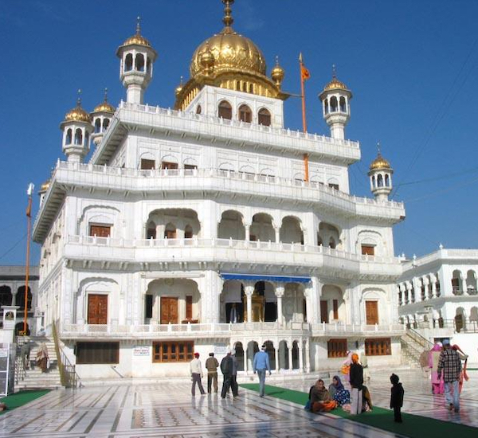
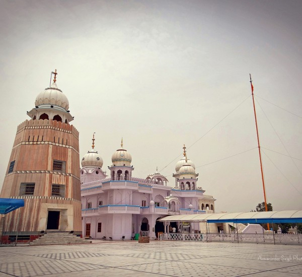
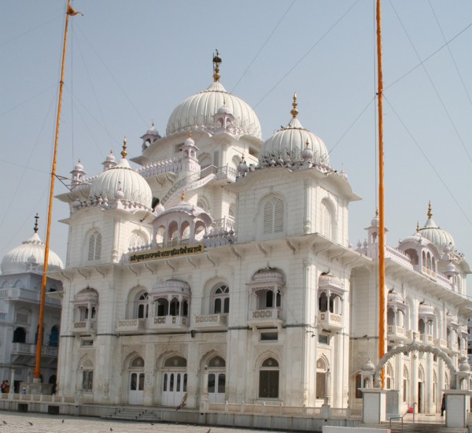
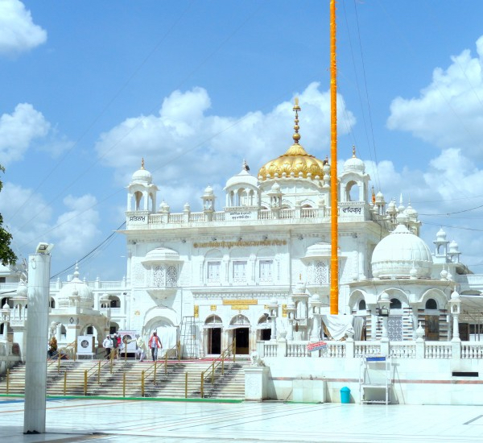

The Five Takhts of Sikhism
1. Akal Takht Sahib Ji – Amritsar

The foremost supreme throne and temporal seat of Sikh religious authority is Sri Akal Takhat Sahib located in Amritsar of Punjab, India. The Akal Takhat, sometimes referred to as Akal Banga, is situated inside the Golden Temple complex opposite Darbar Harmandir Sahib.
Sixth Guru Hargobind Sahib JI originally established the Akal Takhat in 1663 as a symbol of political sovereignty and where spiritual and temporal concerns of the Sikh people could be addressed. In the 18th century, Ahmed Shah Abdali and Massa Rangar led a series of attacks on the Akal Takht and Harmandir Sahib. Hari Singh Nalwa, a general of Maharaja Ranjit Singh, decorated the Akhal Takht with gold.
The Sikh holy scripture, Guru Granth Sahib, is housed in the Akal Takhat after hours while in Sukhasan. Ancient sacred manuscripts are preserved on the premises along with antique shaster weaponry used by Sikh gurus and warriors.
📖 Read Full Details & Visitor Guide for Akal Takht Sahib2. Takht Sri Kesgarh Sahib Ji – Anandpur Sahib
Takhat Sri Kesgarh Sahib Ji is a famous Gurudwara is located right in the heart of Anandpur Sahib and is among the most revered Sikh institutions in the country. Its foundation was laid in 1689, and the Khalsa Panth was born here. The initiation of Khande di Pahul by Guru Gobind Singh Ji happened here on the holy day of Baisakhi in 1699. This sacred shrine holds great importance among locals. Takhat Sri Kesgarh Sahib Ji has a rich and glorious history. The invading armies were never able to reach this place. It is one of the five supreme seats of authority (Takhats). It is home to numerous relics and memoirs from the past, including Guru Gobind Singh’s Khanda- the double-edged sword that was used by him to prepare Amrit, his personal dagger- Katara, his own gun that was gifted to him by one follower in Lahore, and the double-edged weapon called Saif, that was gifted to him by Bahadur Shah.
The current building complex is a majestic structure in white, shining brightly in the sun. It was built between 1936 and 1944. Because it is built on the slope of a hill, two levels are supported and protected by retaining walls. Visitors will be enthralled to see the mighty gateway that extends over two-storeys and has multiple offices and a vast courtyard.
The ground level has the main building at an elevation of about 2.5 meters. The holy Guru Granth Sahib rests outside the sanctum under a canopy adorned by a lotus-shaped dome with a high-rising pinnacle and a khanda. Adjoining the sanctum are the weapons of Guru Gobind Singh Ji. Visitors must treat themselves to a hearty, free meal at the langar hall.
📖 Read Full Details & Visitor Guide for Kesgarh Sahib3. Takht Sri Damdama Sahib Ji – Bhatinda

Sri Damdama Sahib was recognised as the 4th Takht of Sikhism in November of 1966 by Shiromani Gurdwara Prabandhak Committee and 5th Takht of Sikhism by the Government of India in April of 1999. Guru Gobind Singh Ji wanted to make this place a literary hub and read and wrote a lot during his stay here in 1706, which lasted nearly a year. He wanted to make a literary pool at this place so that no Sikh would remain illiterate.
It was at this place that Guru Gobind Singh Ji revised and finalised Guru Granth Sahib Ji or the Adi Granth, which was originally compiled by Guru Arjan Dev Ji, and added the verses of Guru Teg Bahadur Ji, the ninth Guru and his father.
Damdama means a place to breathe and find peace, which is why Guru Gobind Sigh Ji came here after fighting a tumultuous battle against the Mughals and having his sons die a tragic yet heroic death with two of them- Sahibzada Fateh Singh and Sahibzada Zorawar Singh- being bricked alive in Sarhind, now known as Fatehgarh Sahib, and Sahibzada Ajit Singh and Sahibzada Jujhar Singh dying leading the Sikh armies to battle.
After the death of his 2 youngest sons in Sarhind, Guru Gobind Singh Ji sent a Zafarnama to Aurangzeb, calling him out on his dishonour of not keeping his words, which he etched in the Holy Quran, the Holy Book of Muslims, and telling him how despite his conniving tricks and huge army of a lakh soldiers being sent against him and his Sikh army of only a handful, Aurangzeb and the Mughals failed miserably in their mission of capturing Guru Gobind Singh Ji.
📖 Read Full Details & Visitor Guide for Damdama Sahib4. Takht Sri Patna Sahib Ji – Bihar

Harmandir Takht Shri Patna Sahib, popularly known as Patna Sahib Gurudwara is one of the holiest pilgrimages for the Sikh community. Located on the banks of holy Ganga, this Gurudwara in Patna, Bihar was built commemorating the tenth Guru of Sikhs, Shri Guru Gobind Singh.
The Gurudwara is regarded as the epicentre of Sikhism in Eastern India. Patna Sahib Gurudwara is the second acknowledged and accepted Takht of the five all total Takhts of Sikhism, which means ‘seat of authority’. A morning prayer called ardaas is being performed here every morning at 5:45 A.M and evening prayer at 6:00 P.M. The langar or free food service is offered here to all the visitors and visitors are also welcomed to volunteer in langar services since it is believed to be an offering to God.
The Prakash Parv or the birth anniversary of Guru Gobind Singh Ji is celebrated in December every year which is one of the major attractions of this place.
📖 Read Full Details & Visitor Guide for Patna Sahib5. Takht Sri Hazur Sahib Ji – Nanded

Hazur Sahib is a sacred monument that houses one of the five takhts or thrones of temporal authority. Also famous as Abchalnagar and Takht Sachkhand Sri Hazur Sahib, Hazur Sahib is a renowned location for Sikh Pilgrimage. This is where Guru Gobind Singh breathed his last in 1708. The temple or the Gurudwara was built around the location where Guru Gobind Singh was cremated.
The stunning architecture of the Gurudwara is quite a treat to the eyes and so is the complex that extends around it on the banks of River Godavari in Nanded, Maharashtra. Every year, hundreds of thousands of followers visit the Gurudwara. What is more humbling is that they welcome people from every background with open arms. Therefore, its pristine beauty and serene ambience can also be enjoyed by tourists visiting Nanded.
Apart from its architectural grandeur, it is also highly revered for its religious significance. When Guru Gobind Singh Ji was discussing Guruship on the sacred Guru Granth Sahib Book, he renamed Nanded as Abchalnagar which means a steadfast city. His teachings lead to a way of thinking that revolves around God and his truth. Thus, the place was also called ‘Sachkhand’ which literally means the region of truth. Having said that, Gurunanak, in his texts, has used the name to denote the abode of God as well.
📖 Read Full Details & Visitor Guide for Hazur Sahib